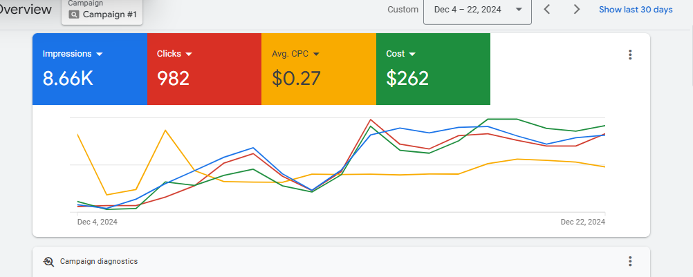

ACQUIREGoogle Ads
High intent Available for select remote projects
Growth marketer · systems builder
I build the system between ad spend and revenue.
Google Ads, conversion-focused landing pages, GA4/GTM tracking, CRM pipelines, and AI-assisted follow-up—connected into one measurable customer journey.
LIVE WORKFLOWLead journey
ActiveCONVERTLanding page
Lead capturedMEASUREGA4 + GTM
Source savedOPERATECRM + AI
Hot · 92/100MONETIZEBooked call
Revenue linkedTHE DIFFERENCEMarketing and sales finally share one source of truth.
Click → customerMicheal AderintoStrategy + implementation
Paid acquisitionConversion designMeasurementLead operationsAutomation
What I do
Most marketers stop at the lead. I connect what happens next.
I help service businesses and growing brands turn disconnected marketing tools into a clear operating system—from the first search to the final sales outcome.
Paid acquisition
Search campaigns built around intent, location, offer clarity, negative keywords, and conversion quality—not vanity traffic.
- Google Ads
- Campaign architecture
- Search-term optimization
Landing pages & funnels
Fast, mobile-first pages that match the ad, answer objections, establish trust, and make the next step obvious.
- Conversion copy
- CRO
- Lead capture
Tracking & attribution
A measurement plan that keeps campaign context attached to forms, calls, bookings, pipeline stages, and closed revenue.
- GA4
- Google Tag Manager
- Event design
CRM & AI workflows
Organized lead records, qualification, ownership, response alerts, approved follow-up, booking, and weekly reporting.
- Airtable
- Make / n8n
- AI qualification
Selected work
Systems designed to solve real business problems.
Working demos, implementation repositories, and client builds across local services, real estate, and commerce.
Featured case study2026
Ad-to-Revenue Growth System
A complete, interactive demonstration of how a Google Ad becomes a tracked lead, qualified CRM record, follow-up sequence, booked appointment, and attributed closed sale.
Google AdsGA4/GTMCRMAI routingRevenue attribution
Transparent portfolio demo using a fictional company and synthetic data.
KR
Local-service growth plan
Home servicesStrategy + build
KR Gutters Growth System
A conversion-led website and acquisition framework covering local search, paid ads, SEO, lead capture, and follow-up.
Landing pagePPC planLocal SEO
View repository ↗LH
Property lead operations
Real estateCRM workflow
Lightway Homes Lead System
A property journey that captures budget and timeline, scores lead fit, assigns staff, and routes enquiries into an accountable pipeline.
CRMAI scoringAutomation
View repository ↗CC
Premium commerce experience
CommerceWeb experience
Chex Computers Storefront
A premium laptop retail and wholesale experience designed for product discovery, trust, mobile browsing, and direct enquiries.
Product UXResponsive UISEO structure
View repository ↗ME
Mobile-first gadget catalog
Gadget retailWebsite
Megabros Enterprises
A mobile-first gadget storefront presenting device inventory, brand trust, contact paths, and a cleaner buying experience.
Catalog UIMobile UXLead capture
View repository ↗Hands-on execution
Strategy supported by real platform work.
I work across campaign structure, search terms, landing-page experience, tracking, CRM handoff, and reporting. The goal is not simply cheaper clicks—it is a cleaner path to qualified conversations and revenue.
01 Campaign diagnostics02 Search-term decisions03 Conversion tracking04 Sales follow-through

Based in LagosOpen to remote collaboration
About me
I combine marketing judgment with implementation.
I’m Micheal Aderinto, a growth marketer and systems builder focused on the space between customer acquisition and sales execution.
My work spans paid search, conversion pages, analytics, CRM design, and automation. That lets me diagnose the whole lead journey instead of optimizing one isolated tool while the rest of the process leaks opportunities.
I’ve worked across local services, real estate, healthcare, and gadget retail—building practical systems that teams can understand, operate, and improve.
01Business outcome first
Tools follow the process and commercial goal.
02Track what matters
Bookings and revenue—not inflated activity metrics.
03Build for handoff
Clients keep ownership, visibility, and documentation.
How I work
A focused path from diagnosis to a working system.
Every engagement starts by finding the largest leak—not by forcing a predetermined tool stack.
Audit
Map acquisition, landing pages, tracking, lead handling, follow-up, booking, and revenue reporting.
Design
Define the offer, events, CRM fields, ownership, qualification, automation, and success criteria.
Build & test
Implement the system and run controlled test leads through success, failure, booking, and closed outcomes.
Launch & improve
Monitor lead quality and sales outcomes, then prioritize the next highest-impact improvement.
Working toolkit
Tools I use to connect the journey.
Google AdsMeta AdsKeyword researchOffer strategy
HTML/CSS/JSReactNext.jsTailwindCRO
GA4Google Tag ManagerClarityEvent design
AirtableGoogle SheetsMaken8nZapier
Have a lead-generation problem?
Let’s find the leak before you buy more traffic.
Send a short description of your business, current lead source, and biggest challenge. I’ll reply with the first area I would investigate.
Email Micheal ↗Browse GitHub ↗adreintomicheal6@gmail.com